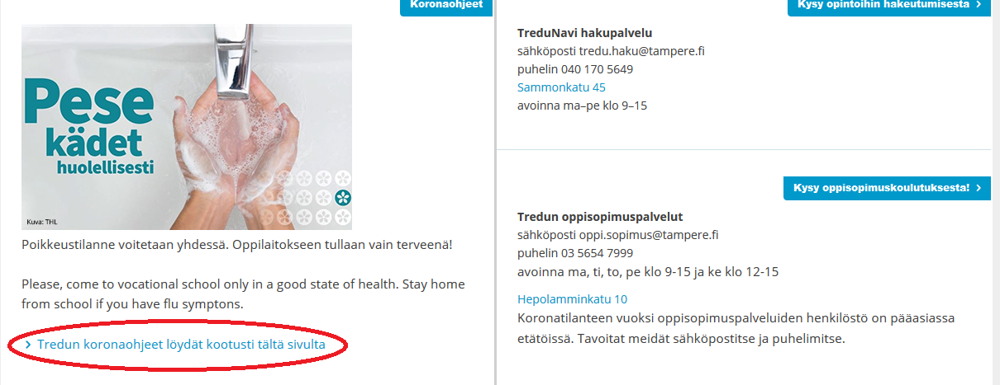

Käytettävyysarvio
Tehtävänä on arvioida Jakob Nielsenin periaatteiden perusteella sivuston toimivuutta. Valitse sivu tai web-sovellus ja kirjoita ohjeen mukainen käytettävyysarvio. Sivuksi tai web-sovellukseksi kannattaa valita sellainen, jossa on toiminnallisuutta, esimerkiksi kauppa (tuotteiden selailu, ostoskori, tilauksen tekeminen) tai ilmoittautuminen / rekisteröityminen.
MS Word: aloita uusi Word-asiakirja, pyri noudattamaan asiakirjastandardia tässäkin työssä (ylätunniste, sivunumerot, rivivälit, riippuva sisennys, marginaalit). Kirjaa aluksi aihe ja lyhyt kuvaus mikä palvelu kysymyksessä. Löytyykö tietoa käyttäjämääristä tms.
Työssä kannattaa (=tulee) käyttää kuvaruutukaappauksia hyväksi, voit korostaa niissä asioita esim. Paint-muotojen avulla (1. Print Screen, 2. liitä Paint-sovlelukseen, 3. lisää muoto, 4. valitse ja kopioi, 5. liitä Word-asiakirjaan). Toinen vaihtoehto on Snip-tool (Windows-valikko, kirjoita snip) joka on helppokäyttöinen apuohjelma.

- Sivuston nimi ja osoite
- Mitä sivustolla tehdään, ketkä sitä käyttävät. Arvio käyttäjämäärästä.
- Heuristiset kysymykset
- Tilan näkyvyys: käyttäjän tulee nähdä tila (onko valmis), toteutuuko tämä sivustossa?
- Tuotteen ja tosielämän vastaavuus: metaforan käyttö, ristiriidat, ymmerrättävyys? Esimerkiksi ovi -> uloskirjautuminen. Löyyykö tätä esim. pikakuvakkeissa, onko ongelma?
- Käyttäjän konrolli ja vapaus: mahdollisuus kokeilla vapaasti, perua toimintoja, suorittaa haluamassaan järjestyksessä.
- Yhteneväisyys ja standardit: yleiset muodot, värit yms.
- Virheiden estäminen: voiko käyttää virheellisesti? Onko opastus tarjolla?
- Tunnistaminen ennen muistamista: ymmärtäminen tulisi tapahtua luontevasti, perustuen jo tiedettyyn (vs. ohjeiden lukeminen)
- Käytön joustavuus ja tehokkuus: pikakuvakkeet, käyttäminen jos rajoitteita motoriikassa? Tässä kohtaa kannattaa kokeilla miten mobiilinäkymä sivustolla toimii (Chorme, F12, esimerkiksi laitteeksi Galaxy S5).

- Esteettinen ja minimalistinen design: ymmärrettävyys ennen kaikkea! Huomion tulee kiinnittyä oikeisiin asioihin, ei koristeita jotka vievät käyttäjän huomion.
- Virhetilanteiden tunnistaminen, ilmoittaminen ja korjaaminen: ovatko virheilmoitukset ymmärrettäviä ja kohteliaita?
- Opastus ja ohjeistus: annetaanko ohjeita? Ovatko ohjeet lyhyitä ja ymmärrettäviä?